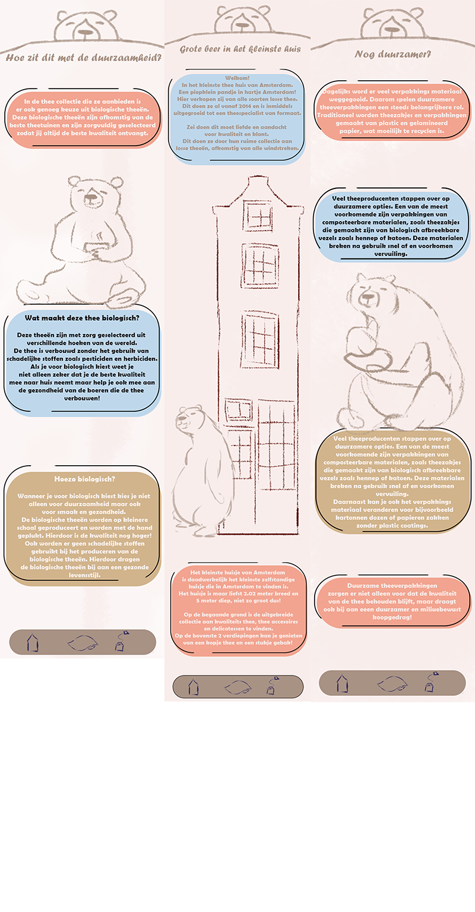

The Tea Bear is a website I created for a school project. In this project, I had to design a website for a company in Amsterdam that contributes to sustainable living. I came across the smallest tea shop in Amsterdam, and it just so happened that they also sold organic tea. So, I decided to create a website for them. I quickly came up with the idea of The Tea Bear (inspired by the big bear in the little house)
